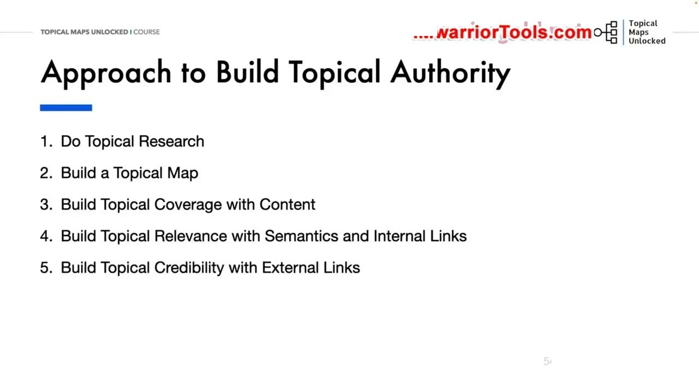
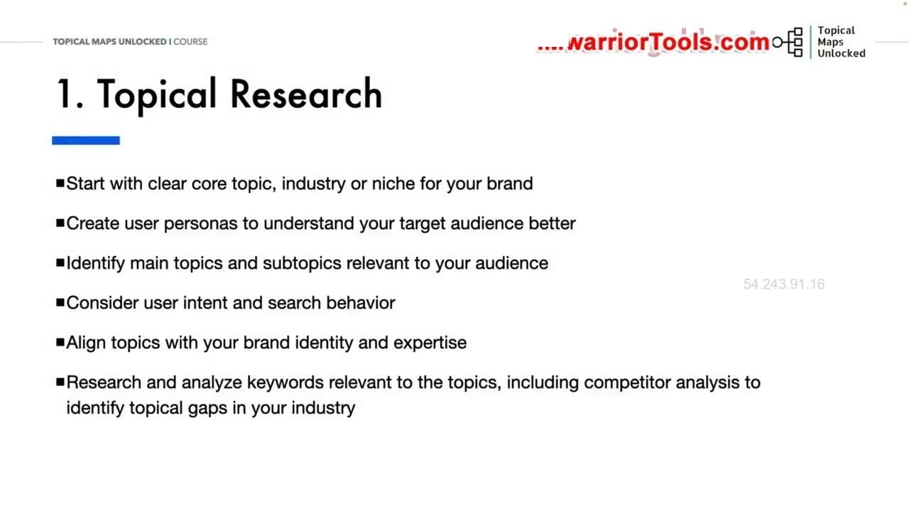
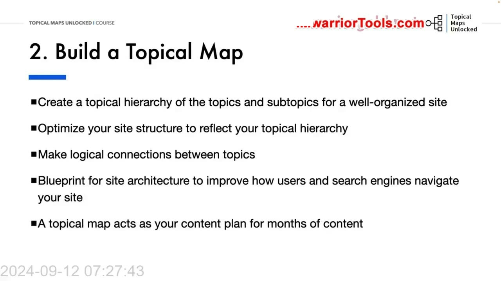
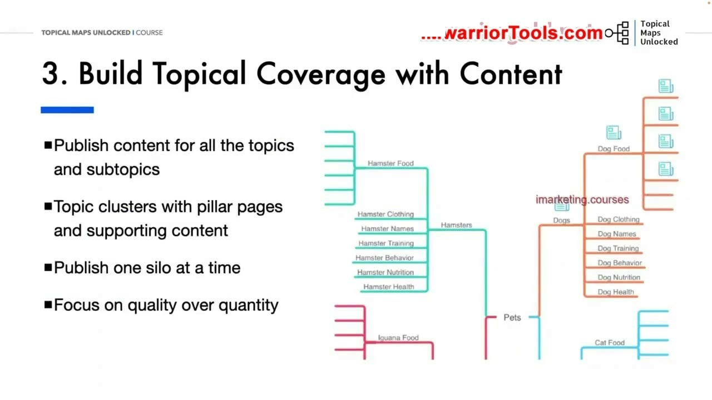
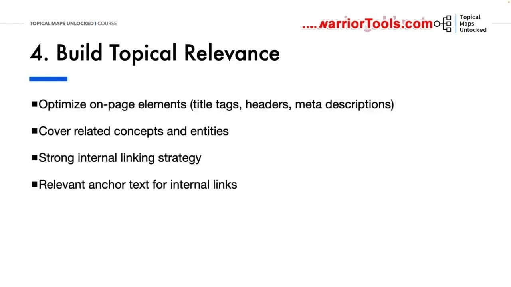
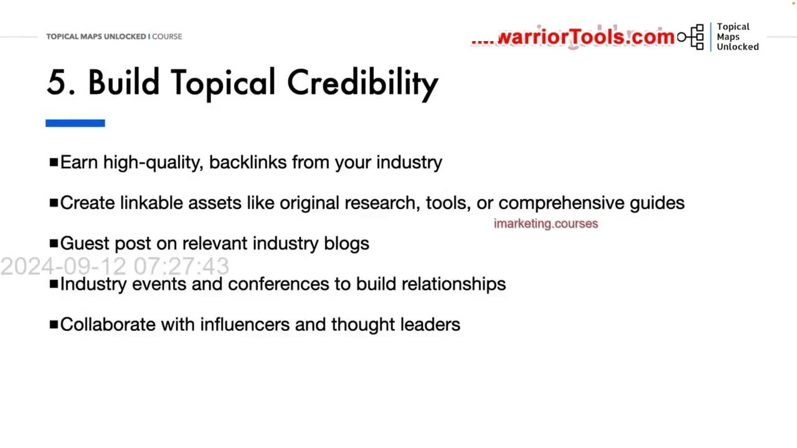
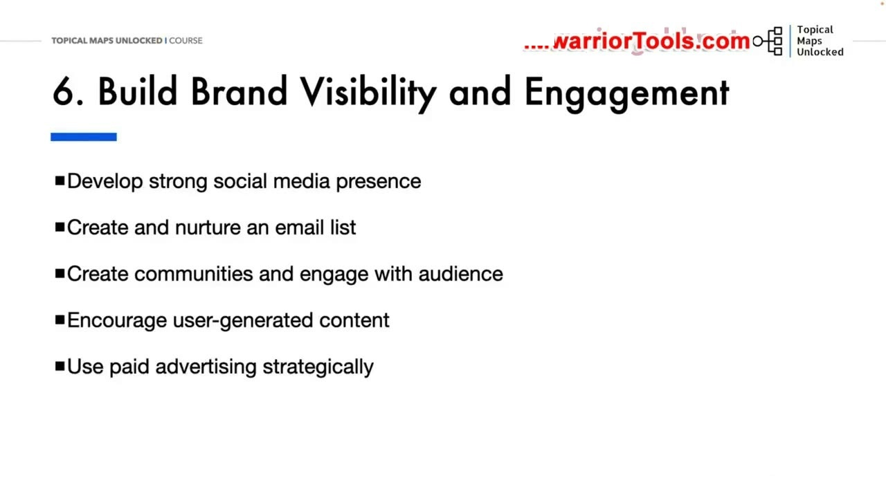

What is the Topical Authority Approach
1. Tổng quan 6 bước trong phương pháp tiếp cận Topical Authority
Phương pháp tiếp cận Topical authority (Topical Authority Approach) là quy trình toàn diện mà đội ngũ TopicalMap thực hiện nhằm mang lại cho website cơ hội thành công lâu dài và vững chắc hơn trong kết quả tìm kiếm. Thay vì chỉ nhắm vào các thủ thuật ngắn hạn, đây là một chiến lược bài bản để tạo ra một trang web mà cả Google, các thuật toán công cụ tìm kiếm lẫn khách truy cập đều nhìn nhận như một nguồn thông tin đáng tin cậy, một chuyên gia thực thụ về một tập hợp các chủ đề chuyên biệt.
Mỗi bước trong quy trình đều đóng vai trò mắt xích thiết yếu để tích lũy dần uy tín theo thời gian. Toàn bộ phương pháp được đúc kết thành 6 giai đoạn trọng tâm liên kết chặt chẽ:
- Do Topical Research: Nghiên cứu kỹ lưỡng chủ đề cốt lõi của thương hiệu, phân tích sâu nhu cầu thực tế của đối tượng mục tiêu và tìm ra các khoảng trống chủ đề.
- Build a Topical Map: Tổ chức toàn bộ nội dung website thành một cấu trúc phân cấp hoàn chỉnh, đóng vai trò bản thiết kế kiến trúc trang web và kế hoạch nội dung dài hạn.
- Build Topical Coverage with Content: Liên tục sáng tạo và xuất bản nội dung chất lượng cao, sâu sắc và hấp dẫn để bao phủ toàn diện các chủ đề chính và chủ đề phụ đã xác định.
- Build Topical Relevance with Semantics and Internal Links: Thiết lập độ liên quan chủ đề vững chắc thông qua tối ưu hóa On-page, các kỹ thuật SEO ngữ nghĩa và chiến lược liên kết nội bộ chặt chẽ.
- Build Topical Credibility with External Links: Nhận các liên kết ngược (Backlinks) chất lượng cao từ các trang web uy tín cùng ngành để củng cố thẩm quyền và sự tin cậy từ góc nhìn của các chuyên gia bên ngoài.
- Build Brand Visibility and Engagement: Xây dựng sự hiện diện thương hiệu rộng khắp và tăng cường nhận thức thương hiệu thông qua sự tương tác thường xuyên, trực tiếp với khán giả.

2. Bước 1: Nghiên cứu chủ đề (Topical Research), chân dung độc giả và gom cụm từ khóa
Quy trình bắt đầu với việc nghiên cứu chủ đề một cách có định hướng. Yoyao nhấn mạnh tầm quan trọng của việc xuất phát từ một Core topic (chủ đề cốt lõi) rõ ràng hoặc một ngách (niche) cụ thể trong ngành mà thương hiệu có thế mạnh chuyên môn. Bước tiếp theo là tạo ra các chân dung người dùng (User personas) chi tiết để định hướng toàn bộ nghiên cứu vào đúng trọng tâm và đúng đối tượng khán giả mục tiêu mà thương hiệu muốn phục vụ.
Điều này đòi hỏi phải thấu hiểu tường tận người dùng của bạn là ai, những vấn đề nào thực sự quan trọng đối với họ, và nhu cầu thông tin của họ diễn ra như thế nào trong thực tế. Việc phân tích kỹ lưỡng Search intent (ý định tìm kiếm) và hành vi tìm kiếm của người dùng sẽ giúp bạn xác định được cách cấu trúc và trình bày nội dung sao cho phù hợp nhất với thói quen tiếp nhận thông tin của họ.
Đồng thời, bạn cần căn chỉnh các chủ đề với nhận diện thương hiệu và chuyên môn thực tế của doanh nghiệp để đảm bảo chiến lược nội dung hoàn toàn đồng nhất với định vị thương hiệu tổng thể. Nghiên cứu và phân tích từ khóa cung cấp nguồn dữ liệu thô thiết yếu để nuôi dưỡng bản đồ chủ đề. Song song với đó, việc phân tích đối thủ cạnh tranh để phát hiện các Topical gaps (khoảng trống chủ đề mà đối thủ bỏ sót) là cách thông minh để nắm bắt cơ hội vượt lên trong ngành. Bước cuối cùng của giai đoạn này là gom cụm từ khóa theo chủ đề (Keyword clustering), giúp ngăn chặn triệt để tình trạng các bài viết tự cạnh tranh lẫn nhau (Keyword cannibalization) và đảm bảo mỗi trang web nhắm đúng vào một thực thể hoặc chủ đề chuyên biệt.

3. Bước 2: Xây dựng bản đồ chủ đề (Topical Map) làm bản thiết kế kiến trúc và kế hoạch nội dung
Với toàn bộ dữ liệu nghiên cứu đã hoàn thành, bước tiếp theo là chuyển hóa chúng thành một Topical map hoàn chỉnh. Bản đồ này thiết lập một hệ thống phân cấp chủ đề và tiểu chủ đề rõ ràng cho toàn bộ trang web, tổ chức nội dung đi từ các chủ đề rộng mang tính định hướng cho đến các chủ đề cụ thể, chi tiết hơn ở tầng dưới.
Trong quá trình vẽ bản đồ, người làm SEO tạo ra các kết nối logic chặt chẽ giữa những chủ đề có liên quan với nhau. Các kết nối này sẽ đóng vai trò xương sống cho việc thiết lập cấu trúc liên kết nội bộ (Internal linking) ở các bước triển khai sau đó. Đồng thời, danh sách các từ khóa liên quan cũng được gán trực tiếp vào từng chủ đề và tiểu chủ đề tương ứng.
Bản đồ chủ đề đóng vai trò như một bản thiết kế (blueprint) cho kiến trúc website, giúp cả người dùng lẫn bot của công cụ tìm kiếm dễ dàng điều hướng và khám phá toàn bộ độ sâu nội dung của trang web. Ngoài ra, nó còn là một bản thảo kế hoạch nội dung (Content plan) trực quan cho nhiều tháng tiếp theo. Người làm SEO cần liên tục cập nhật và tinh chỉnh bản đồ khi thu thập thêm dữ liệu thực tế, đặc biệt là phải tính đến yếu tố mùa vụ (seasonality) và các chủ đề thịnh hành mới xuất hiện trong ngành. Để xây dựng bản đồ, khóa học sử dụng kết hợp giữa bảng tính (Google Sheets) và các công cụ lập sơ đồ tư duy (Mind map).

4. Bước 3: Xây dựng độ phủ chủ đề với nội dung và nguyên tắc xuất bản hoàn chỉnh từng Silo
Khi đã có trong tay bản đồ chủ đề hoàn chỉnh, quy trình bước sang giai đoạn phủ kín các chủ đề bằng nội dung thực tế. Đội ngũ triển khai sẽ xây dựng các cụm chủ đề (Topic clusters) bao gồm các trang trụ cột (Pillar pages) đóng vai trò trung tâm và các bài viết hỗ trợ (Supporting content) giải quyết từng khía cạnh chi tiết. Yoyao đưa ra một nguyên tắc mang tính cốt lõi: phải xuất bản hoàn chỉnh từng Silo một (Publish one silo at a time).
Việc nhảy từ Silo này sang Silo khác một cách tùy tiện trong khi viết nội dung sẽ làm phân tán tín hiệu và khiến Google bối rối về việc website thực sự là chuyên gia ở lĩnh vực nào. Để minh họa rõ ràng, Yoyao so sánh hai bức tranh thực tế: hình bên trái thể hiện cách làm sai lầm khi nhảy cóc giữa các chủ đề khác nhau (thường gắn liền với chiến lược săn từ khóa đuôi dài rời rạc); trong khi hình bên phải thể hiện cách tiếp cận đúng đắn khi xây dựng trọn vẹn cụm chủ đề về loài chó và thức ăn cho chó trước để xác lập uy tín và chuyên môn vững chắc tại ngách đó rồi mới mở rộng sang các nhánh khác.
Bên cạnh đó, Yoyao đặc biệt lưu ý rằng chất lượng nội dung luôn luôn phải được ưu tiên hàng đầu so với số lượng xuất bản, nhất là trong bối cảnh hiện nay khi các công cụ tạo nội dung bằng AI xuất hiện tràn lan trên thị trường. Một bài viết chất lượng cao, sâu sắc và giải quyết triệt để vấn đề của người đọc có giá trị gấp nhiều lần hàng chục bài viết nông cạn tạo hàng loạt.

5. Bước 4: Xây dựng độ liên quan chủ đề bằng tối ưu On-page, Semantic SEO và liên kết nội bộ
Để công cụ tìm kiếm hiểu rõ mức độ phù hợp và độ sâu của nội dung, bước thứ tư tập trung vào việc thiết lập độ liên quan chủ đề (Topical relevance). Quá trình này bắt đầu từ việc tối ưu hóa bài bản các yếu tố trên trang (On-page elements) như thẻ tiêu đề (Title tags), các cấp tiêu đề (Headings H1, H2, H3) và thẻ mô tả (Meta descriptions) sao cho phản ánh chính xác chủ đề đang thảo luận.
Tiếp theo, người làm SEO áp dụng các kỹ thuật SEO ngữ nghĩa (Semantic SEO) để bao quát toàn diện các khái niệm và thực thể (entities) có liên quan chặt chẽ tới chủ đề. Việc thực hiện một chiến lược liên kết nội bộ (Internal linking) mạnh mẽ bám sát theo cấu trúc của Topical map là yếu tố then chốt, kết hợp với việc sử dụng văn bản neo (Anchor text) phù hợp, mang tính ngữ cảnh rõ ràng để dẫn dắt người đọc và phân bổ sức mạnh liên kết một cách tự nhiên giữa các bài viết.
Ngoài ra, việc tích hợp đánh dấu dữ liệu có cấu trúc (Schema markup) đóng vai trò quan trọng trong việc cung cấp ngữ cảnh rõ ràng cho các thuật toán tìm kiếm hiểu trang web dưới dạng máy đọc được. Cuối cùng, việc chủ động nghiên cứu và đưa vào nội dung những câu hỏi mà người dùng thực tế thường xuyên thắc mắc (FAQs) sẽ giúp bài viết dễ dàng được thuật toán của Google lựa chọn hiển thị tại các vị trí nổi bật khi phát hiện sự trùng khớp về mặt chủ đề và ý định tìm kiếm.

6. Bước 5: Xây dựng uy tín và độ tin cậy chủ đề thông qua liên kết ngoài chất lượng cao
Uy tín và độ tin cậy chủ đề (Topical credibility) không thể chỉ tự tuyên bố trên trang web của mình mà cần được chứng thực bởi các thực thể bên ngoài. Điều này đạt được thông qua việc nhận các liên kết ngược (Backlinks) chất lượng cao từ các trang web có thẩm quyền và uy tín trong cùng ngành hoặc lĩnh vực chuyên môn của bạn.
Yoyao chia sẻ một loạt phương pháp thực tế để thu hút các liên kết tự nhiên có giá trị:
- Tạo ra các tài sản có thể liên kết (Linkable assets): Thực hiện các nghiên cứu dữ liệu gốc, phát triển các công cụ trực tuyến nhỏ hữu ích, hoặc biên soạn các cẩm nang hướng dẫn toàn diện mà người khác muốn trích dẫn.
- Viết bài khách (Guest blogging): Tìm kiếm cơ hội đóng góp bài viết chất lượng trên các blog và tạp chí chuyên ngành có liên quan.
- Kết nối trực tiếp: Tham gia các sự kiện, hội thảo và hội nghị chuyên ngành để xây dựng mối quan hệ đối tác thực tế và lan tỏa tên tuổi của thương hiệu.
- Hợp tác với người có ảnh hưởng (Influencers và Thought leaders): Bắt tay cùng các chuyên gia đầu ngành để cùng tạo nội dung hoặc nhận được sự bảo chứng từ họ.
- Giám sát hồ sơ liên kết: Chủ động theo dõi và từ chối (disavow) các liên kết ngược chất lượng thấp, spam hoặc hoàn toàn không liên quan để bảo vệ sức khỏe website.
- Digital PR: Áp dụng các kỹ thuật quan hệ công chúng kỹ thuật số để nhận được các lượt đề cập và liên kết từ các trang tin tức báo chí và các cổng thông tin ngành có thẩm quyền cao.

7. Bước 6: Hiện diện thương hiệu, tương tác đa kênh và tạo dựng giá trị lâu dài
Bước cuối cùng trong quy trình là liên tục xuất hiện, xây dựng sự hiện diện thương hiệu vững chắc, lan tỏa nhận thức về thương hiệu và duy trì sự tương tác thường xuyên với khán giả mục tiêu. Xây dựng thẩm quyền không dừng lại ở ranh giới của một website mà cần được thể hiện nhất quán trên toàn bộ hệ sinh thái trực tuyến.
Các hoạt động triển khai bao gồm: phát triển sự hiện diện mạnh mẽ trên các nền tảng mạng xã hội phù hợp nơi độc giả mục tiêu đang hoạt động; tích cực tương tác bằng cách trả lời chu đáo các câu hỏi, bình luận và phản hồi từ người dùng; xây dựng và chăm sóc danh sách email để duy trì kênh giao tiếp trực tiếp, không phụ thuộc vào thuật toán của bên thứ ba; và thiết lập các không gian cộng đồng riêng biệt thông qua diễn đàn, nhóm Facebook, Discord hoặc các nền tảng học tập.
Doanh nghiệp cũng nên tăng cường gắn kết thông qua các buổi hỏi đáp trực tiếp (Q&A live sessions) và sự kiện trực tuyến; khuyến khích nội dung do chính người dùng tạo ra (UGC) như bình luận chuyên sâu và lời chứng thực (testimonials) trên website; đồng thời có thể sử dụng quảng cáo trả phí một cách có chiến lược để khuếch đại tầm tiếp cận cho những nội dung trụ cột quan trọng. Việc lắng nghe, theo dõi các đề cập đến thương hiệu và chủ động tham gia vào các cuộc thảo luận trực tuyến sẽ hoàn thiện bức tranh về một thương hiệu đầu ngành đáng tin cậy. Yoyao kết luận: xây dựng Topical authority đòi hỏi sự kiên trì bền bỉ, không có con đường tắt hay kết quả qua đêm, nhưng đây là sự đầu tư mang lại giá trị to lớn và bền vững nhất cho sự thành công dài hạn của trang web.

Nguồn và đối chiếu
- Topical Maps Unlocked 2.0 · 02-What is the Topical Authority Approach (Video bài học chính).
- Đối chiếu ngữ nghĩa với bản tiếng Anh: Bản Tiếng Anh/02-Tropical Authority Module/02-What is the Topical Authority Approach.mp4 (xác thực quy trình 6 bước, nguyên tắc Silo và chiến lược Linkable assets).